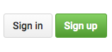
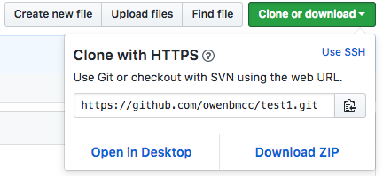

Getting started
Using GitHub as a publishing tool helps us do a few things:
- Learn git! This is a very valuable and marketable tool.
- Collaborate easily.
- Publish simple webpages online for free.
- Hosting for git repositories
- Social network for code
Sign up at GitHub.com

Use an email you can check, you will have to confirm your email.

Add a repo name, description and initialize with a README.md

Copy the remote address from the "Clone or download" dropdown.
We will add this remote to our repo using the git remote add origin command in Terminal.
We're going to use GitHub Pages to publish the repo.
Navigate to the Settings tab on the GitHub repo page and scroll down to the to the GitHub Pages section. Click the dropdown under Source and choose the master branch.

Your website will be published at the URL <username>.github.io/<reponame> where your username is you GitHub acount and the repo name is whatever you named your repository.


When you make changes to your site, you can use git commit to add a new snapshot to your repo and then push the changes to the remote GitHub repo, and it will publish the new version.
Remember to always write a new commit message that describes the changes you have made.